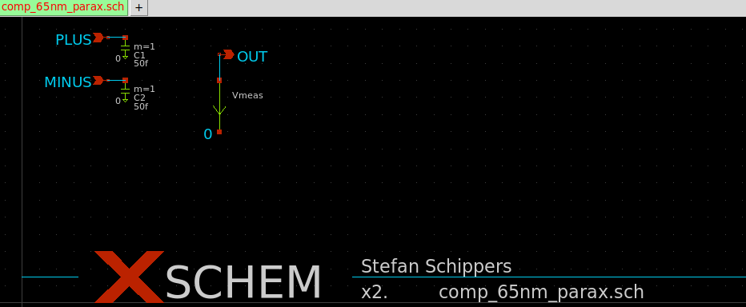
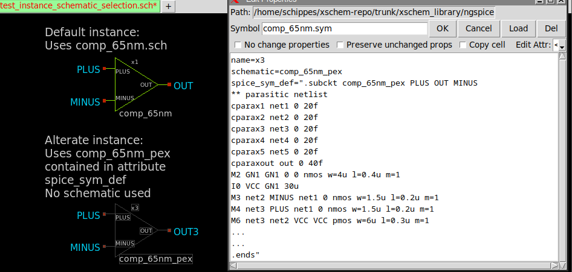
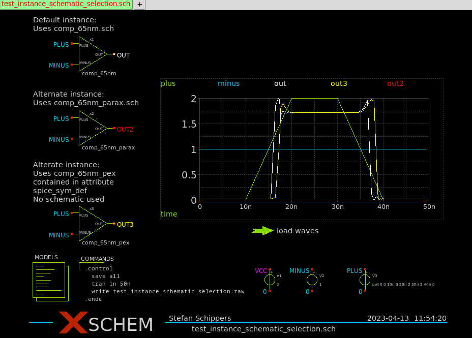
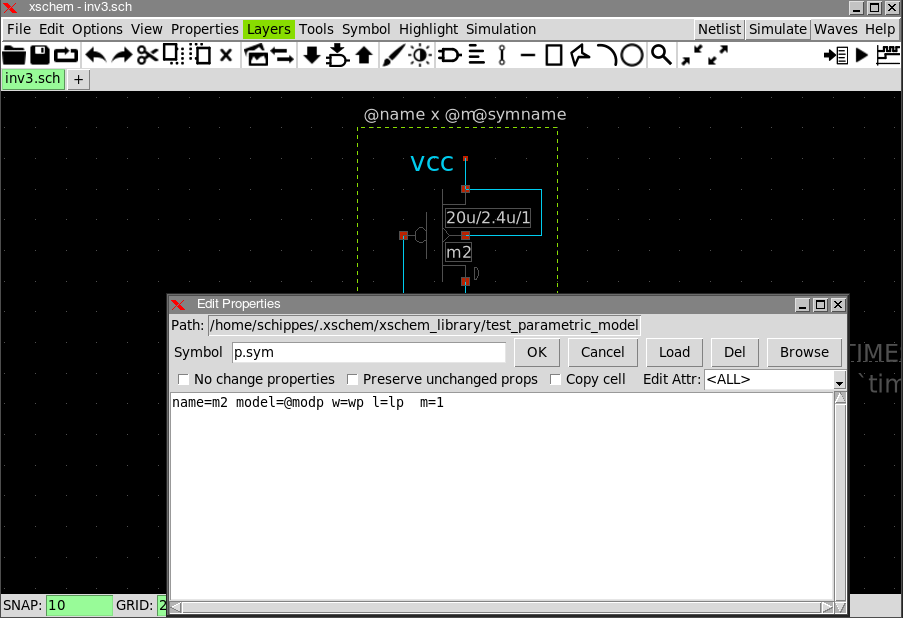
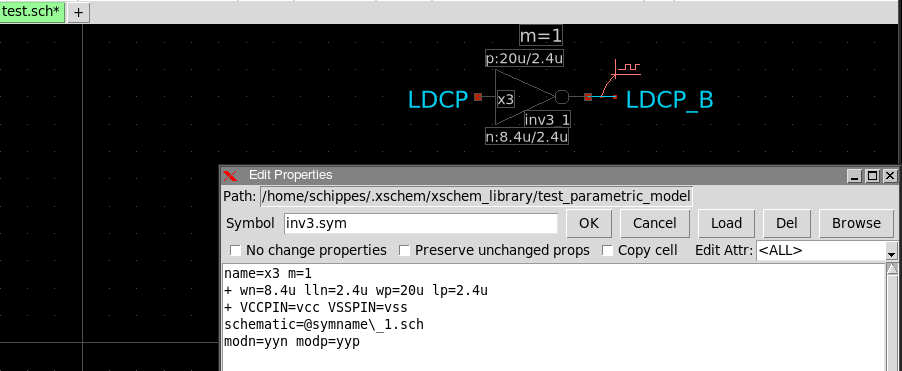
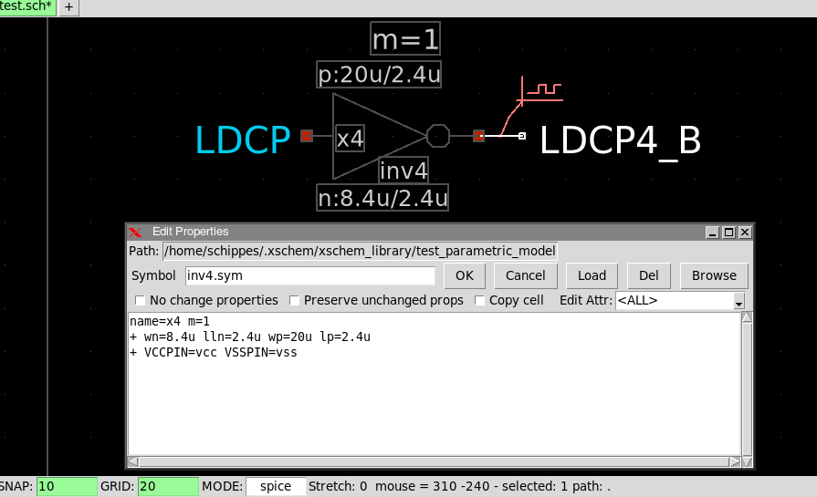
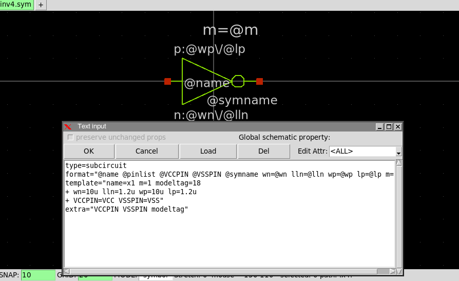
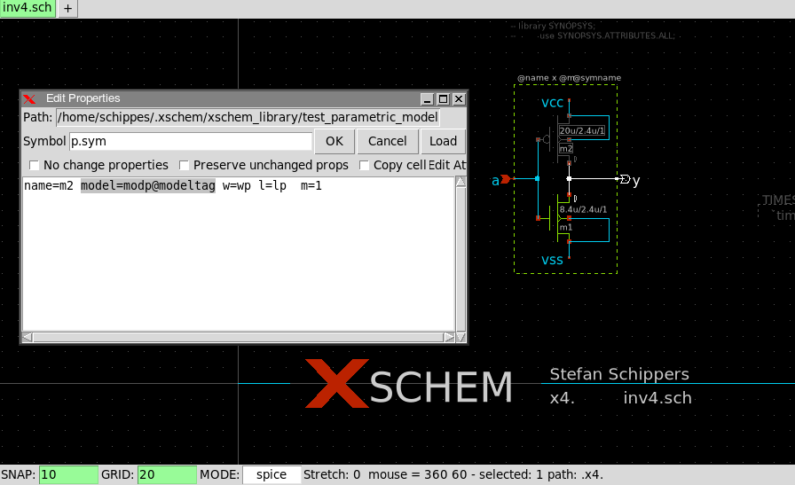
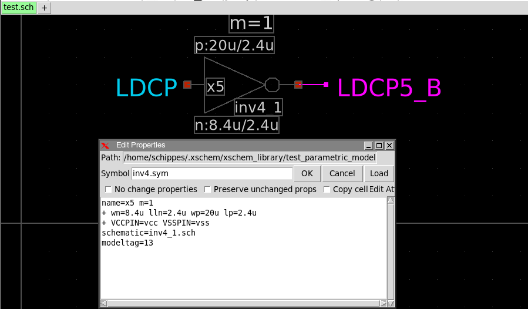

TUTORIAL: INSTANCE BASED SELECTION OF SYMBOL IMPLEMENTATION
It is quite common to have in a design multiple instances of the same subcircuit.
Think for example of memory arrays and decoder circuits.
In some cases there are numerous instances of the same identical circuit. This leads to a very
large netlist and heavy simulation loads (both in time and space).
On the other hand typically only a small portion of these repetitive circuits are exercised in
simulation. For example you might want to simulate the selection only of the first 2 wordlines
and the last 2 wordlines in a 1024 wordlines memory array.
In these situations it might be useful to keep the full subcircuit implementation for the circuit parts that are exercised and provide a simplified subcircuit for the parts that are idle during simulation. The simplified parts may just do the 'essential work' like driving the idle value on the outputs and loading the inputs with an equivalent of the input capacitance, in order to not alter the full circuit behavior.
schematic attribute on instance
Inside a symbol it is possible to specify an alternate schematic to descend into.
For example if symbol inv.sym has attribute schematic=inv2.sch then
xschem will descend into inv2.sch instead
of the default inv.sch.
See symbol_property_syntax man page.
However these attributes at symbol level are applied to all instances of that symbol.
To enable instance based differentiation it is now possible to use this attribute in the instance.
A schematic=<schematic reference> attribute attached to an instance will specify the
schematic implementation to be used for that (and only that) instance of the subcircuit.
Example:
schematic=comp_65nm_parax.sch
The comp_65nm_parax.sch schematic may be something like this, that is a simplified circuit that just keeps a known value on the outputs and adds some parasitic capacitance to the inputs.
spice_sym_def attribute on instance
A spice_sym_def=<...text...> attribute attached to an instance will specify some text that describes the subcircuit (it can be a simplified spice subcircuit netlist or a spice .include line that gets the subcircuit from an external file). This attribute on an instance must always be paired with a matching schematic attribute that specifies the subcircuit name the instance is linked to.

Another possibility is to specify these attributes so the actual netlist will be included by the simulator.
schematic=comp_65nm_pex
spice_sym_def=".include /path/to/comp_65nm_pex.cir"
When a spice_sym_def is specified no alternate schematic is used for this instance.
The definition is provided as text (a piece of netlist, like for example a parasitic spice netlist extraction).
Putting this all together here is a schematic with 3 instances of comp_65nm.sym.
- x1 is the standard instance using the default comp_65nm.sch
- x2 is a simplified instance that just keeps the output low.
- x3 uses a parasitic extraction netlist (output will move slower).
See the waveforms of the OUT, OUT2, OUT3 signals that behave accordingly.
Automatic port order setting from provided subcircuit netlist (Spice netlists only)
If a spice_sym_def attribute is defined and has one of the following forms:
spice_sym_def=" .subckt opamp PLUS MINUS OUT VCC VSS ... ... ... .ends "
Or:
spice_sym_def=".include /path/to/subckt_file"
Xschem will use the port order provided in the subckt line, either by looking directly into the attribute value or by loading the file specified by the .include line. This way there will not be inconsistencies between instance line and subckt definition in the circuit netlist. If for some reason the port list can not be read or pin names do not match xschem will use the port order drom the .sym file.
Note: all the above concepts are valid for VHDL, Verilog and tEDAx netlists by replacing the spice_sym_def attribute with vhdl_sym_def, verilog_sym_def and tedax_sym_def respectively.
Instance based SPICE model
In some cases a device is specified by a model and if model parameters can not be set in the instance line we need multiple models if we want to use multiple devices with different model parameters. This can be done by specifying a model in the following way:
type=mechanical_rotational format="@name @pinlist inertia@name .model inertia@name inertia_omega_tau J=@J" template="name=N1 J=1.1"
Note the model name is given as inertia@name, this will make each model instance have a different and unique name. This will generate an instance line:
N1 A B C inertiaN1 .model inertiaN1 inertia_omega_tau J=1.4
A better way hat handles also vectored instances is the following:
type=mechanical_rotational format="@name @pinlist #inertia#@name .model #inertia#@name inertia_omega_tau J=@J" template="name=N1 J=1.1"
This way if you place a vectored instance name=N1[3:0] it will expand in netlist as:
N1[3] XAA XBB XCC inertiaN1[3] N1[2] XAA XX XCC inertiaN1[2] N1[1] XAA XX XCC inertiaN1[1] N1[0] XAA XX XCC inertiaN1[0] .model inertiaN1[3] inertia_omega_tau J=1.2 .model inertiaN1[2] inertia_omega_tau J=1.2 .model inertiaN1[1] inertia_omega_tau J=1.2 .model inertiaN1[0] inertia_omega_tau J=1.2
Subcircuits with SPICE models given as parameters
In general SPICE allows parameters to be passed to subcircuits. This is the case for dimensions, like
W=2u, L=0.15u that are passed to a subcircuit.
The subcircuit uses these parameters (W, L) instead of numbers,
making the subcircuit truly parametric. However transistor models in a subcircuit can not be passed as parameters,
the following inverter instantiation is illegal:
X1 A Y inverter W=2u L=0.15u modn=cmosn modp=cmosp
To overcome this problem Xschem must generate multiple subcircuits.
Consider the following inv3.sym symbol:
the symbol has the following attributes:
type=subcircuit format="@name @pinlist @VCCPIN @VSSPIN @symname wn=@wn lln=@lln wp=@wp lp=@lp m=@m" template="name=x1 m=1 modn=xmodn modp=xmodp + wn=10u lln=1.2u wp=10u lp=1.2u + VCCPIN=VCC VSSPIN=VSS" extra="VCCPIN VSSPIN modn modp"
In above attributes two parameters are defined that specify transistor models, modn and modp, with default values (if unspecified in instance) xmodn and xmodp. The inverter subcircuit transistors will use the @modn and @modp as SPICE models:
If an inv3.sym is placed n the schematic and no schematic=... parameter is given to create an instance based subcircuit specialization:
The following netlist will be produced:
x2 LDCP3_B LDCP vcc vss inv3 wn=8.4u lln=2.4u wp=20u lp=2.4u m=1 ... ... .subckt inv3 y a VCCPIN VSSPIN wn=10u lln=1.2u wp=10u lp=1.2u *.opin y *.ipin a m2 y a VCCPIN VCCPIN xmodp w=wp l=lp ad='wp *4.6u' as='wp *4.6u' pd='wp *2+9.2u' ps='wp *2+9.2u' m=1 m1 y a VSSPIN VSSPIN xmodn w=wn l=lln ad='wn *4.3u' as='wn *4.3u' pd='wn *2+8.6u' ps='wn *2+8.6u' m=1 .ends
However if another instance is placed:
with following attributes:
name=x3 m=1 + wn=8.4u lln=2.4u wp=20u lp=2.4u + VCCPIN=vcc VSSPIN=vss schematic=@symname\_1.sch modn=yyn modp=yyp
the following netlist is generated:
x3 LDCP_B LDCP vcc vss inv3_1 wn=8.4u lln=2.4u wp=20u lp=2.4u m=1 ... ... .subckt inv3_1 y a VCCPIN VSSPIN wn=10u lln=1.2u wp=10u lp=1.2u *.opin y *.ipin a m2 y a VCCPIN VCCPIN yyp w=wp l=lp ad='wp *4.6u' as='wp *4.6u' pd='wp *2+9.2u' ps='wp *2+9.2u' m=1 m1 y a VSSPIN VSSPIN yyn w=wn l=lln ad='wn *4.3u' as='wn *4.3u' pd='wn *2+8.6u' ps='wn *2+8.6u' m=1 .ends
You see that a second inv_1.sym is generated with changed models (yyn and yyp). This allows you to reuse the same symbol with different model names. Xschem does the necessary work to duplicate the subcircuit, since model names can not be set as parameters.
Another example of spice models given as parameters
Consider the following symbol instance:
with the following symbol definition
And the following schematic definition. Note the model syntax for the p-channel transistor (the n-channel transistor has a similar model=modn@modeltag definition):
The following netlist will be produced
... ... x4 LDCP4_B LDCP vcc vss inv4 wn=8.4u lln=2.4u wp=20u lp=2.4u m=1 ... ... * expanding symbol: inv4.sym # of pins=2 ** sym_path: /home/schippes/.xschem/xschem_library/test_parametric_model/inv4.sym ** sch_path: /home/schippes/.xschem/xschem_library/test_parametric_model/inv4.sch .subckt inv4 y a VCCPIN VSSPIN wn=10u lln=1.2u wp=10u lp=1.2u *.opin y *.ipin a m2 y a VCCPIN VCCPIN modp18 w=wp l=lp ad='wp *4.6u' as='wp *4.6u' pd='wp *2+9.2u' ps='wp *2+9.2u' m=1 m1 y a VSSPIN VSSPIN modn18 w=wn l=lln ad='wn *4.3u' as='wn *4.3u' pd='wn *2+8.6u' ps='wn *2+8.6u' m=1 .ends ... ...
You see the @modeltag will be substituted looking first in the mos transistor attributes (but there is no definition there), then in the containing symbol template attributes (and there is a modeltag=18 definition).
Now suppose you want to place another instance of inv4.sym but with a different modeltag: Since we know that spice does not allow model names to be passed as parameters we need to specialize the inv4.sch subcircuit to a new inv_1.sch subcircuit. Therefore we give the attribute schematic=inv4_1.sch to the second inv4 instance. We also set there a different modeltag: modeltag=13
The netlist for this additional instance will be:
... ... x5 LDCP5_B LDCP vcc vss inv4_1 wn=8.4u lln=2.4u wp=20u lp=2.4u m=1 ... ... * expanding symbol: inv4_1.sym # of pins=2 ** sym_path: /home/schippes/.xschem/xschem_library/test_parametric_model/inv4.sym ** sch_path: /home/schippes/.xschem/xschem_library/test_parametric_model/inv4.sch .subckt inv4_1 y a VCCPIN VSSPIN wn=10u lln=1.2u wp=10u lp=1.2u *.opin y *.ipin a m2 y a VCCPIN VCCPIN modp13 w=wp l=lp ad='wp *4.6u' as='wp *4.6u' pd='wp *2+9.2u' ps='wp *2+9.2u' m=1 m1 y a VSSPIN VSSPIN modn13 w=wn l=lln ad='wn *4.3u' as='wn *4.3u' pd='wn *2+8.6u' ps='wn *2+8.6u' m=1 .ends ... ...
This way it is possible from a single symbol (inv4.sym in the example) to netlist multiple instances of it with different models, in the example using a modeltag variable.